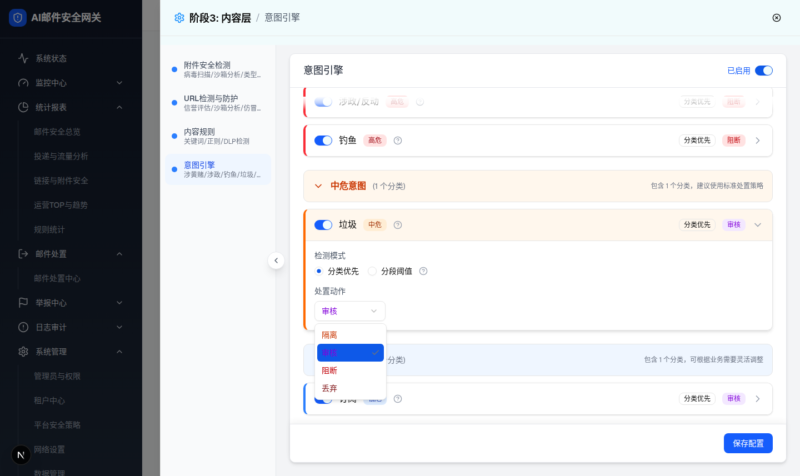
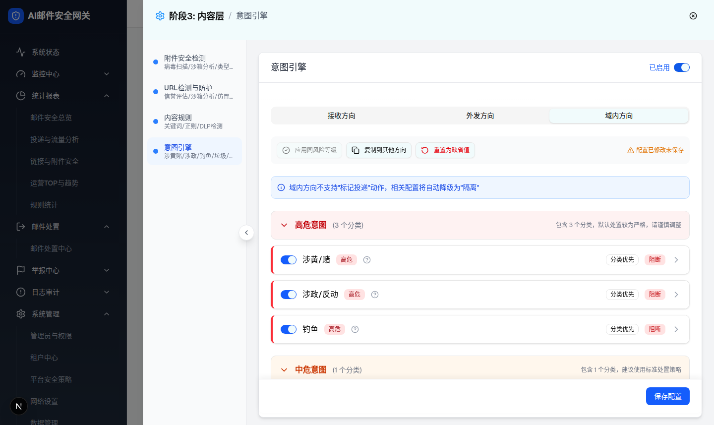
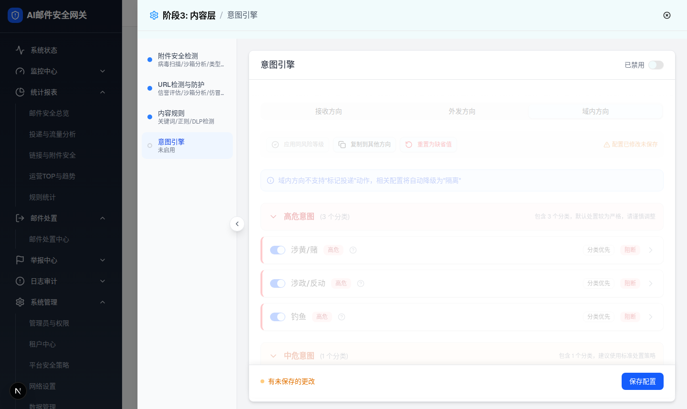

| 所属组件 | 2.2 方向 Tab / 策略总开关（IntentEngineModule + ContentStrategyPage） |
| 主文件 | index.html |
| 触发路径 | 层级0 → 点击「外发方向」/「域内方向」Tab；抽屉卡片头 Switch |
| 浏览器验证 | 切外发方向：出现蓝色提示条「外发方向不支持"标记投递"动作，相关配置将自动降级为"隔离"」，展开的意图卡全部收起（实测 radiogroup 数量 0），风险面板开合保留。外发垃圾卡默认动作=审核；动作下拉实测 4 项：隔离/审核/阻断/丢弃（无标记投递）。域内方向提示条文案为「域内方向不支持…」。总开关关闭：文字变「已禁用」，内容区实测 class opacity-50 pointer-events-none，保存栏仍可点。 |
| 意图 | 默认动作（当前方向） | 可选动作集 |
|---|
动作下拉实例（跟随方向过滤）：



| 交互 | 实际行为（浏览器验证） | PRD 对照 |
|---|---|---|
| 切换方向 Tab | direction state 切换；setExpandedIntent(null) 收起所有展开卡；各方向配置独立（receive/send/internal 三份 DirectionIntentConfig） | §3.1「切换显示对应方向的配置，收起所有展开的意图卡片」一致 |
| 方向提示条 | direction≠receive 时渲染，文案按方向替换「外发/域内」 | §2.2.1 一致（TC-IE-025 通过） |
| 动作集过滤 | 接收 RECEIVE_ACTIONS 5 项；外发/域内 SEND_INTERNAL_ACTIONS 4 项（分类优先下拉与阈值区间动作下拉同规则） | §3.3 一致 |
| 方向默认动作 | 接收：高危=隔离 中危=隔离 低危=标记投递；外发/域内：高危=阻断 中危=审核 低危=审核 | PRD 未定义具体默认值，以 demo 为准 |
| 面板开合状态 | 随方向切换保留（RiskLevelPanel 本地 state，不重置） | PRD 未提及，demo 附加行为 |
| 总开关关闭 | 「已禁用」+ 内容区 opacity-50 pointer-events-none；左导航摘要变「未启用」、状态圆点变灰描边；保存配置按钮仍可点击 | §3.2/§4.2 一致（TC-IE-031 通过） |
| 单意图开关关闭 | 卡片展开体半透明禁点，头部仍可展开收起（见层级1截图） | §3.2/§4.2 一致（TC-IE-032 通过） |
| 比对项 | demo 实际 DOM | 提取的 HTML 预览 | 是否一致 |
|---|---|---|---|
| 方向 Tab | [role=tablist].grid-cols-3；点击外发后 data-state=active 迁移 | 3 tab 等宽 grid，active 高亮迁移 | 一致 |
| 提示条 | 外发实测「外发方向不支持"标记投递"动作，相关配置将自动降级为"隔离"」，bg-blue-50 + Info 图标；域内文案首词替换 | 同文案同条件渲染 | 一致 |
| 展开卡收起 | 切方向后 [role=radiogroup] 数量 0（无展开卡） | 预览切方向后收起演示区 | 一致 |
| 外发动作集 | [role=listbox] 选项实测 [隔离, 审核, 阻断, 丢弃] | 下拉按方向重建选项 | 一致 |
| 总开关 | [role=switch] data-state checked→unchecked；「已启用」→「已禁用」；dim 容器 class 实测 flex-1 overflow-y-auto … opacity-50 pointer-events-none | 预览同步 label/半透明 | 一致 |